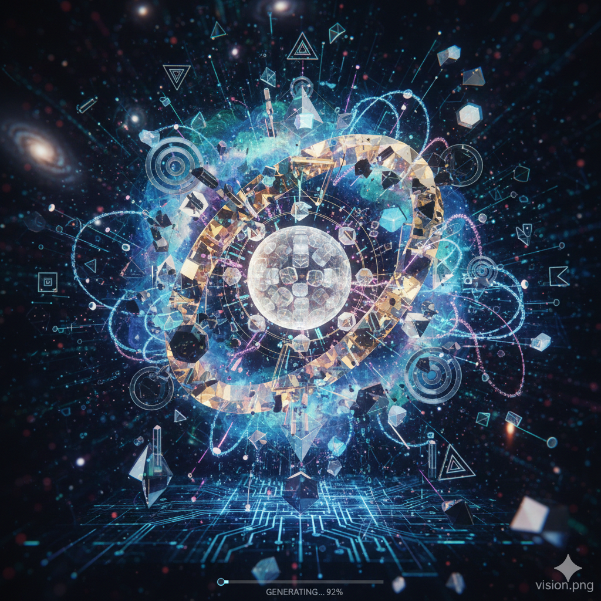
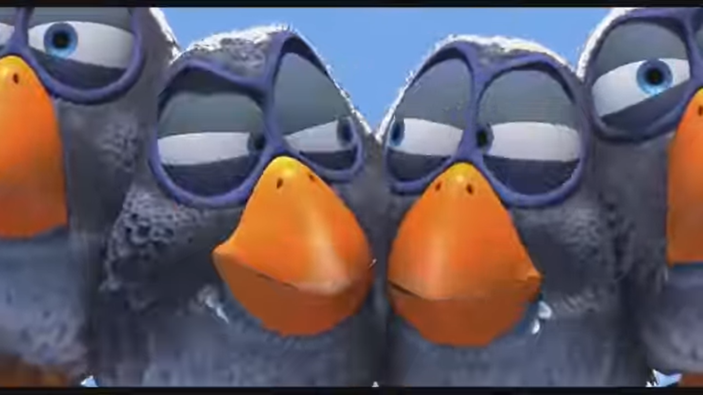
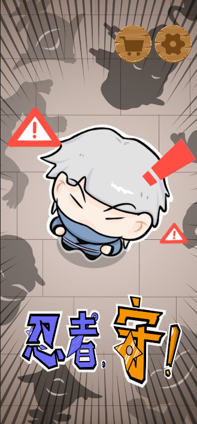
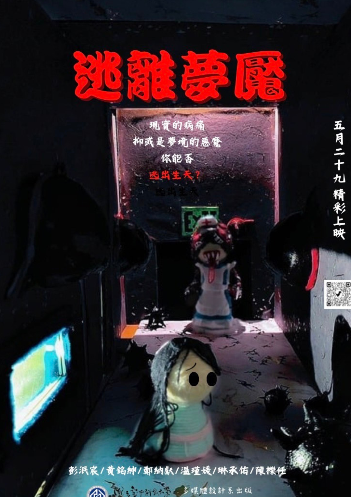

Selected Works
Sound / Remix

Electronic Music Remix
以節奏拆解與重組為手法，將聲音視為可被操作的空間元素。
AI / Visual
Award-winning AI Image
透過人與 AI 的共創流程，重新定義作者與生成之間的界線。
Interaction / Game

Symbol-based Mini Game
以手勢與符號辨識作為核心互動邏輯，探討玩家與系統之間的即時回饋關係。
Animation

Stop-motion Puppet Animation
透過逐格拍攝，呈現實體物件在時間軸上的敘事可能性。
Concept Statement
This Portfolio is based on the rational layout of Swiss Web Style, ensuring the clarity and order of
information structure. and introduced the spatial narrative logic presented by Apple Vision Pro, Transform
the user's scrolling behavior into a "close to object" viewing experience.。
Works span games, AI visuals, music and puppet animation.
Focusing on interaction, perception and technological narratives,
Try to think about the possibility of a future where digital works are no longer just browsed, but
perceived.。